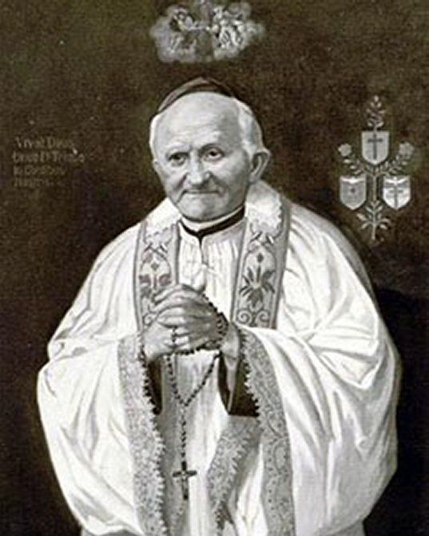

"SÃO ARNALDO
JANSSEN"

"O ADMIRÁVEL FUNDADOR DA ORDEM MISSIONÁRIA DO VERBO DIVINO"
=ÍNDICE=
- NO CÉU BRILHA OUTRA ESTRELA
- FUNDAÇÃO DA CASA MISSIONÁRIA
- MISSIONÁRIOS DO VERBO DIVINO
- IMAGENS + ÚLTIMAS NOTÍCIAS + E-MAIL